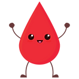

'a' in 'hola'Truereturn.print.input.input. En todo caso, hacer que la función reciba el o los datos por parámetro.La materia usa Discord como plataforma adicional para la resolución de los ejercicios de las guias.
Tengan a bien leer con atención el mensaje de bienvenida y las reglas de convivencia. Pueden ingresar al servidor a través del siguiente link.
En esta guía nos dedicaremos a introducirnos en los conceptos de programación y algoritmo. Para los primeros seis ejercicios, te recomendamos ver este video para recordar cómo entiende la computadora nuestras instrucciones.
Se tiene que explicar a una máquina exactamente cómo servir un vaso de jugo (de los que vienen en cartón) de la heladera. Recordando la definición de algoritmo, hacer una descripción paso a paso de lo que se tiene que hacer y usar para lograr el objetivo. Pista: No vas a necesitar nada de código en este ejercicio, sólo nombrar los pasos.
Se tiene que explicar a una máquina exactamente cómo hacer una tostada con queso, pensá qué ingredientes se necesitan con sus cantidades, cómo tiene que ser el espacio de trabajo y los elementos que va a necesitar usar. Recordando la definición de algoritmo, hacer una descripción paso a paso de lo que se tiene que hacer y usar para hacer una tostada con queso. Pista: No vas a necesitar nada de código en este ejercicio, sólo nombrar los pasos.
Se te pide que organices una colecta de alimentos no perecederos por la Ciudad de Buenos Aires. Contamos con algunos automóviles y camionetas de voluntarios, un listado de donaciones, listado de los alimentos a donar, la disponibilidad horaria y la dirección en la cual se dejan los alimentos. La colecta se realiza en un solo día. ¿Cómo la organizarías? Pista: No vas a necesitar nada de código en este ejercicio, sólo nombrar los pasos.
Tenés que enviar invitaciones personalizadas para tu cumpleaños. Cada invitación tiene que mencionar el nombre de la persona y la relación que tiene con vos. Contamos con una impresora a la que le das el texto a enviar, un listado con los nombres de los invitados y la relación que cada uno tiene con vos. ¿Cómo redactarías el texto de la invitación? Pista: No vas a necesitar nada de código en este ejercicio, sólo nombrar los pasos.
Se te encargó definir qué datos son necesarios para el registro de estudiantes en un curso de inglés. ¿Qué datos crees que deberían ser obligatorios y cuáles opcionales? ¿Y si el curso es de cocina? Pista: No vas a necesitar nada de código en este ejercicio, sólo nombrar los pasos.
Contás con un listado de cosas a comprar y tenes que ir a un supermercado que cuenta con distintas góndolas o pasillos. Cada góndola o pasillo puede contar con varios, uno o ninguno de los productos de tu lista. ¿Cuál sería el listado de instrucciones para poder terminar lo más rápido posible? Pista: No vas a necesitar nada de código en este ejercicio, sólo nombrar los pasos.
Con el anexo de Replit de la Unidad 1, realizá tu primer programa: hacé que se imprima por pantalla un “¡Hola mundo!”.
Guardar el texto “Hola, Mundo!” en una variable e imprimirla por pantalla.
Guardar los números 1, 2 y 3 en tres variables distintas e imprimirlos por pantalla.
Crear un programa que le solicite al usuario:
Crear un programa que le solicite al usuario un número, y que devuelva el resto obtenido de dividirlo por 2.
¿Qué operador vimos para obtener el resto?
Escribir un programa que le pida al usuario su año de nacimiento, y que le diga qué edad tiene en el año actual.
Crear un programa que le solicite al usuario 5 enteros y que muestre por pantalla el promedio de ellos. Hacerlo de dos formas:
Crear una función que reciba un número y que devuelva el valor absoluto.
Crear una función que reciba un número y que devuelva True si es par, y False si es impar.
Crear una función que reciba un número y un string, y que devuelva ambos concatenados dentro de un nuevo string.
Crear una función que reciba dos enteros y que devuelva el resto y el cociente entre ellos.
Crear una función que le pida al usuario su nombre y apellido, e los imprima con el siguiente formato: “Apellido, Nombre”.
Hacer una función que reciba una palabra y devuelva la cantidad de letras que tiene.
Hacer una funcion que reciba una palabra, le borre todas las letras “a” e imprima el resultado por pantalla. Pista: usar una función predefinida de Python. Ejemplo: Si se recibe “casa” se debe imprimir “cs”. Pista: usar slices.
Analizar qué tipo de dato (o error) se obtiene al hacer las siguientes operaciones:
5 / 25 // 25 % 25 ** 25.0 / 25.0 // 25.0 % 25.0 ** 25 / 2.05 // 2.05 % 2.05 ** 2.05.0 / 2.05.0 // 2.05.0 % 2.05.0 ** 2.0"Hola" * 2"Hola" + 2"Hola" + "2"x = "Hola"x += " mundo"F = 9/5 * C + 32.Escribir una función que calcule el área de un triángulo recibiendo como parámetros su base y su altura.
Siendo el cálculo de la norma de un vector \(v\) en \(R^3\):
\[||v|| = \sqrt{v_1^2 + v_2^2 + v_3^2}\]
Escribir una función que calcule la norma de un vector en R3 recibiendo como parámetros las 3 componentes \(v_1\), \(v_2\) y \(v_3\) del mismo.
Desafío (no obligatorio): Calcular el área de un rectángulo (alineado con los ejes \(x\) e \(y\)), dadas sus coordenadas \(x_1\), \(x_2\), \(y_1\) e \(y_2\).
Escribir una función que, dado un número entero \(n\), calcule si es impar o no.
Escribir una implementación propia de la función \(abs\), que devuelva el valor absoluto de cualquier valor que reciba. Ejemplo: mi_abs(5) devuelve 5 y mi_abs(-5) devuelve 5. Pista: No se puede usar la función predefinida abs.
Escribir una función que reciba un número y devuelva True si es entero y False si no lo es. Pista: no se puede usar la función isinstance.
Escribir una función para determinar si una letra recibida es vocal o no. La misma debe devolver un valor booleano. Luego, escribir una función para determinar si una letra es consonante o no.
in ni not in.in y not in.lower y upper de string.in y not in
¿Conocés el uso de in?
Para saber si un elemento está en una lista o en un string, podemos usar in y not in. Por ejemplo:
'a' in 'hola'True'w' in 'hola'False'w' not in 'hola'True'casa' in ['cama', 'mesa', 'silla']FalseEscribir funciones que resuelvan los siguientes problemas:
Aries: 21 de marzo al 20 de abril.
Tauro: 21 de abril al 20 de mayo.
Geminis: 21 de mayo al 21 de junio.
Cancer: 22 de junio al 23 de julio.
Leo: 24 de julio al 23 de agosto.
Virgo: 24 de agosto al 23 de septiembre.
Libra: 24 de septiembre al 22 de octubre.
Escorpio: 23 de octubre al 22 de noviembre.
Sagitario: 23 de noviembre al 21 de diciembre.
Capricornio: 22 de diciembre al 20 de enero.
Acuario: 21 de enero al 19 de febrero.
Piscis: 20 de febrero al 20 de marzo.Piedra, papel o tijera: escribir un programa de “Piedra, papel o tijera” tal que sea imposible que el usuario gane. El usuario debe ingresar R (piedra), P (papel), o T (tijera) y la computadora debe siempre ganarle. Ejemplo:
¡Piedra (R), papel (P) o tijera (T)!
Ingrese jugada: R
¡Papel! ¡Gané!¡Piedra (R), papel (P) o tijera (T)!
Ingrese jugada: P
¡Tijera! ¡Gané!¡Piedra (R), papel (P) o tijera (T)!
Ingrese jugada: T
¡Piedra! ¡Gané!¡Piedra (R), papel (P) o tijera (T)!
Ingrese jugada: M
Esa jugada no está disponible.Suponiendo que el primer día del año fue lunes, escribir una función que reciba un número con el día del año (de 1 a 366) y devuelva el día de la semana que le toca. Por ejemplo: si se recibe ‘3’, debe devolver “miércoles”, y si se recibe ‘9’, debe devolver “martes”.
Escribir función que:
[Flaminia, Serena, Agustina, Priscila, Sol, Agostina, Iara, Lu] con el mensaje "Hola <nombre>! Vamos a aprender a programar".1 es impar
2 es par
3 es imparSe quiere hacer un programa para enseñar a los niños las tablas de multiplicar del 1 al 10. Crear una función que reciba un número e imprima por pantalla la tabla de multiplicar de ese número. Ejemplo:
mostrar_tablas_para(1)debe imprimir:
1 x 1 = 1
1 x 2 = 2
1 x 3 = 3
1 x 4 = 4
1 x 5 = 5
1 x 6 = 6
1 x 7 = 7
1 x 8 = 8
1 x 9 = 9
1 x 10 = 10mostrar_tablas_para(-2)debe imprimir:
Error: El número debe ser positivo y estar entre 1 y 10Crear una función que cante el feliz cumpleaños. Dado un entero, debe imprimir ‘Que los cumplas feliz’ en distintas líneas por esa cantidad de veces.
Ejemplo:
Su total a pagar es: 500
Ingrese el monto a pagar: 100
Pendientes: 400. Ingrese el monto a pagar: 200
Pendientes: 200. Ingrese el monto a pagar: 200
Pendientes: 0. Gracias por su compra.Ejemplo:
Su total a pagar es: 500
Ingrese el monto a pagar: 100
Pendientes: 400. Ingrese el monto a pagar: 200
Pendientes: 200. Ingrese el monto a pagar: 300
Pendientes: 0. Su vuelto es: 100. Gracias por su compra.Escribir un programa que le pida al usuario que ingrese un número. Para ese número, se imprime la tabla de multiplicar del 1 al 10. Luego, se le vuelve a pedir otro número. Si el usuario ingresa “X”, el programa debe terminar. El usuario debe poder ingresar números indefinidamente hasta que ingrese “X”. Se puede reutilizar la función del ejercicio 9 de esta guía.
Ejemplo:
Hola! Esto es Tablas de Multiplicar
Ingrese un número o "X" para salir: 1
1 x 1 = 1
1 x 2 = 2
1 x 3 = 3
1 x 4 = 4
1 x 5 = 5
1 x 6 = 6
1 x 7 = 7
1 x 8 = 8
1 x 9 = 9
1 x 10 = 10
Ingrese un número o "X" para salir: -2
Error: El número debe ser positivo y estar entre 1 y 10
Ingrese un número o "X" para salir: X
¡Adios!Manejo de contraseñas
True o False).Hacer una función que reciba un número del 1 al 10, y luego permita al usuario poder adivinar ese número, ingresando valores repetidamente. Para cada ingreso del usuario, el programa debe indicarle si su numero es menor o mayor al número a adivinar. Una vez que el usuario ingresa el número correcto, lo felicita y termina.
Repetir permitiendo únicamente 3 intentos.
Repetir generando el número aleatoriamente de la siguiente forma dentro de la función, sin recibirlo por parámetro:
import random
numero_a_adivinar = random.randint(1, 10)
print(numero_a_adivinar)9¿Sabías que Python tiene muchas librerías que podés usar para hacer cosas más complejas? Por ejemplo, la librería random tiene funciones para generar números aleatorios. También hay otras librerías como Pandas para trabajar con datos, Matplotlib para hacer gráficos, Numpy para trabajar con matrices, y muchas más. Vamos a estar viendo estas tres en la última unidad de la materia.
Una librería es un conjunto de funciones que alguien más escribió y que podemos usar en nuestros programas. Para usar una librería, primero tenemos que importarla. Por ejemplo, para usar la librería random, tenemos que poner import random al principio de nuestro programa (arriba de todo en nuestro archivo). Luego, podemos usar las funciones de la librería, como random.randint(1, 10).
Se debe seguir solicitando fichas siempre que no se haya alcanzado la cantidad necesaria para funcionar. Cuando se haya alcanzado la cantidad necesaria, se debe imprimir un mensaje que indique “¡A jugar!”. Ejemplo:
Ingresá 2 fichas para comenzar: F
Ingresá 2 fichas para comenzar: B
Ingresá 2 fichas para comenzar: Hola
Ingresá 2 fichas para comenzar: F
¡A jugar!Ingresá 2 fichas para comenzar: F
Ingresá 1 fichas para comenzar: B
Ingresá 1 fichas para comenzar: ficha
Ingresá 1 fichas para comenzar: F
¡A jugar!Crear una función que calcule si un número es primo o no. Un número es primo cuando solamente es divisible por sí mismo y por 1. Pista: usar el operador módulo %.
Desafío (obligatorio): Crear una función que reciba un número entero e imprima los números primos entre 0 y el número ingresado.
Desafío (obligatorio):
Crear una función que reciba dos números, y devuelva la suma de todos los números múltiplos de 7 entre esos dos números. Por ejemplo, si recibe 3 y 25, debe devolver 7 + 14 + 21 = 42. Si recibe 3 y 4, debe devolver 0, ya que no hay múltiplos de 7 entre esos dos números.
Repetir calculando el promedio en vez de la suma.
Repetir calculando únicamente el promedio entre los primeros 3 múltiplos de 7 encontrados. Pista: usar break.
Repetir calculando únicamente el promedio entre los múltiplos de 7 encontrados que no sean múltiplos de 2. Pista: usar continue.
Desafío (obligatorio):
Para ello, en cada paso debe preguntarle al usuario la cantidad de ejercicios resueltos por el alumno, o pedirle que ingrese “*” para salir. Debe mostrar por pantalla el porcentaje correspondiente a la cantidad de ejercicios resueltos respecto a la cantidad de ejercicios del examen y una leyenda que indique si aprobó o no.
Escribir funciones que dada una cadena y un caracter:
Inserte el caracter entre cada letra de la cadena. Ejemplo: 'separar' y '-' debería devolver 's-e-p-a-r-a-r'.
Reemplace todos los espacios por el caracter. Ejemplo: 'mi archivo de texto.txt' y '_’ debería devolver 'mi_archivo_de_texto.txt'.
Reemplace todos los dígitos de la cadena por el caracter. Ejemplo: 'su clave es: 1540' y '*' debería devolver 'su clave es: ****'.
Inserte el caracter cada 3 dígitos en la cadena. Ejemplo: '2552552550' y '.' debería devolver '255.255.255.0'
Modificar todas las anteriores para que, adicionalmente, reciba un parámetro que indique la cantidad máxima de reemplazos o inserciones a realizar. Ejemplo: 'su clave es: 1540', '*' y 3 debería devolver 'su clave es: ***0'.
Escribir una función que reciba una cadena que contiene un largo número entero y devuelva una cadena con el número y las separaciones de miles. Por ejemplo, si recibe 1234567890, debe devolver 1.234.567.890. Cuidado: no es lo mismo 123.456.789.0 que 1.234.567.890. Tienen que ser separaciones de miles y quedar un número válido.
Escribir funciones que dada una cadena de caracteres:
Ciclo Básico Común se debe devolver CBC.anita lava la tina es un palíndromo (se lee igual de izquierda a derecha que de derecha a izquierda).Escribir funciones que dadas dos cadenas de caracteres:
'compu' es subcadena de 'computacional'.'kde' y 'gnome' debe devolver 'gnome'.Escribir una función que, dada una cadena de caracteres, devuelva una lista con cada uno de los caracteres que la componen en mayúscula. Ejemplo: 'Hola' debe devolver ['H', 'O', 'L', 'A']. Restricción: no se permite el uso de ciclos for/while.
Escribir una función que, dada una cadena de caracteres, devuelva una tupla con cada uno de los caracteres que no es una vocal. Ejemplo: 'Algoritmos' debe devolver ('l', 'g', 'r', 't', 'm', 's'). Restricción: no se permite el uso de ciclos for/while.
Escribir una función que, dada una cadena de caracteres, devuelva el número de índice del último caracter. Por ejemplo, para la cadena 'Hola' debe devolver 3. Restricción: no se permite el uso de ciclos for/while.
Desafío (obligatorio):
Se quiere implementar un buscador dentro de un editor de texto, que permita encontrar todas las ocurrencias de una palabra en un texto. Para ello, se debe implementar una función que reciba como parámetro una palabra y un texto, y que devuelva una lista con las posiciones de inicio de cada ocurrencia de la palabra dentro del texto. Ejemplo: si se busca 'al' en 'calcule el precio al valor actual', debe devolver [1, 18, 22, 31]. Pista: index arrojará un error si la subcadena no se encuentra. ¿Qué otro método tenemos disponible para buscar subcadenas?
Modificar la función anterior para que devuelva la cantidad de ocurrencias encontradas. Ejemplo: si se busca 'al' en 'calcule el precio al valor actual', debe devolver 4. Restricción: No se puede usar el método len.
Desafío (no obligatorio): Escribir una función que reciba dos cadenas de caracteres y devuelva una lista con todos los caracteres que no tienen en común. Ejemplo: 'Python' y 'Hola' debería devolver el conjunto de letras ['P', 'y', 't', 'l', 'a', 'n'], indiferentemente del orden y de si está en mayúscula o minúscula. Nota: para que un caracter esté en la lista, no es necesario que esté en la misma posición. Restricción: no se permite el uso de ciclos for/while. Pista: investigar cómo usar lambda.
Usar un rango para:
Escribir una función que reciba:
True si su longitud es par y False si su longitud es impar.[5, 10, 7, 3] debe devolver [3, 5, 7, 10].Escribir una función que reciba una lista de nombres y un número, que representa el cupo. La función debe devolver en una lista a los nombres que no pudieron entrar al curso por falta de cupo. Ejemplo: chequear_cupo(['Agustina', 'Iara', 'Priscila', 'Sol', 'Lucía'], 3) debe devolver ['Sol', 'Lucía'].
Modificar la función anterior para que devuelva únicamente a la última persona de la lista de la gente que pudo entrar. Ejemplo: chequear_cupo(['Agustina', 'Iara', 'Priscila', 'Sol', 'Lucía'], 3) debe devolver 'Priscila', porque es la última que tuvo cupo.
Dada la lista de tuplas [("Argentina", 3), ("España",1), ("Uruguay", 2), ("Francia",2)], donde cada tupla contiene un país y la cantidad de mundiales que ganaron:
País: <nombre> - Copas: <cantidad>Si y sólo si el país es “Argentina”, se debe imprimir el nombre con 3 estrellas: "Argentina⭐⭐⭐". Usar el operador abreviado +=.
Hacer una función que reciba la lista por parámetro y devuelva la cantidad de mundiales que ganaron entre todos los países. Ejemplo: contar_mundiales([("Argentina", 3), ("España",1), ("Uruguay", 2), ("Francia",2)]) debe devolver 8.
Hacer una función que reciba la lista por parámetro y la devuelva, ordenada por cantidad de copas ganadas.
Hacer una función que reciba la lista por parámetro y devuelva una lista con los países que tienen más de una copa ganada.
Escribir una función que reciba dos fichas de dominó y determine si encajan o no entre sí.
(3,4) y (5,4).'3-4' y '5-4'.Escribir una función que reciba dos vectores y devuelva su producto escalar. El producto escalar se calcula como: Siendo \(v1 = (v1_1, v1_2, ..., v1_n)\) y \(v2 = (v2_1, v2_2, ..., v2_n)\), entonces
\[v1 \cdot v2 = (v1_1 \cdot v2_1) + (v1_2 \cdot v2_2) + ... + (v1_n \cdot v2_n)\] Si los vectores no tienen las mismas dimensiones, la función debe devolver None.
Se tiene una base de datos con nombres de libros de la siguiente forma ["La Noche de la Usina", "La Pregunta de sus Ojos", "Ser Feliz era Esto",...], y se quiere saber cuántos libros repetidos tienen. Escribir una función que reciba la base de datos y devuelva, para cada uno de los títulos, cuántos ejemplares hay. La lista no tiene un tamaño fijo, y puede contener muchos títulos repetidos.
Escribir una función que reciba una tupla, un índice, y un nuevo valor. La función debe modificar la tupla, cambiando el valor en la posición dada por el índice, por el nuevo valor pasado como parámetro. Devolver la tupla modificada.
Repetir el ejercicio anterior, pero con una lista.
Repetir ambos si ahora, en vez de recibir un índice, se recibe el valor a eliminar. Si no se contiene al valor, se devuelve la estructura tal cual se recibió.
Escribir una función que reciba una lista y un número \(n\). Para dicho número \(n\), debe imprimir los últimos \(n\) elementos de la lista en orden inverso, y luego devolver la lista sin ellos. Ejemplo: Si se recibe [1, 2, 3, 4, 5] y n = 2, debe imprimir 5, 4 y devolver [1, 2, 3].
Escribir una función que reciba una lista de números y devuelva la misma lista en orden inverso.
Escribir una función que dado un valor \(n\), devuelva una lista con los números del 1 a \(n\). Restricción: usar listas por comprensión.
Escribir una función que reciba una matriz y una tupla (fila, columna), y devuelva el valor ubicado en esa posición de la matriz. Ejemplo: si se recibe la matriz [[1, 2], [3, 4]] y la tupla (0, 1), debe devolver 2.
Se tiene una lista de supermercado escrita como string con productos separados por coma: "pan, arroz, pescado, jugo, fideos,...".
Escribir una función que reciba la cadena de caracteres de los productos de supermercado y devuelva una lista con cada uno de los productos por separado: ['pan', 'arroz', 'pescado', 'jugo', 'fideos', ...].
Se tiene además otra cadena de caracteres con los precios de cada producto: "100, 50, 200, 80, 30,...". Escribir una función que reciba ambas cadenas y devuelva una lista con tuplas de (producto, precio): [('pan', 100), ('arroz', 50), ('pescado', 200), ('jugo', 80), ('fideos', 30), ...].
Para la función del punto anterior, escribir otra función que reciba la lista de tuplas y devuelva el precio total de la lista de compras.
Se quiere crear una lista de supermercado, solicitándole al usuario productos hasta que ingrese el valor ‘X’. La función debe devolver los productos en un string, separados por comas. Ejemplo: si se ingresa ‘pan’, ‘arroz’, ‘pescado’, ‘X’, debe devolver "pan, arroz, pescado".
Hacer una función que reciba una lista de palabras, las ordene en orden alfabético y luego las una en un string separadas por espacios. Ejemplo: si recibe ['hola', 'como', 'estas'], debe devolver "como estas hola".
Desafio (obligatorio): Escribir una función que reciba un tamaño y devuelva una matriz con 1 en la diagonal principal y 0 en el resto. Ejemplo: si recibe 4, debe devolver la matriz identidad de tamaño 4x4. \[ \begin{bmatrix} 1 & 0 & 0 & 0 \\ 0 & 1 & 0 & 0 \\ 0 & 0 & 1 & 0 \\ 0 & 0 & 0 & 1 \\ \end{bmatrix} \]
Desafio (obligatorio): Escribir una función que reciba una matriz y devuelva su transpuesta. Ejemplo: si recibe la matriz [[1, 2, 3], [4, 5, 6]], debe devolver [[1, 4], [2, 5], [3, 6]].
Si se recibe: \[ \begin{bmatrix} 1 & 2 & 3 \\ 4 & 5 & 6 \\ \end{bmatrix} \]
Se debe devolver:
\[ \begin{bmatrix} 1 & 4 \\ 2 & 5 \\ 3 & 6 \\ \end{bmatrix} \]
Desafio (no obligatorio): Agenda Simplificada
Escribir una función que reciba una cadena a buscar y una lista de tuplas (nombre_completo, telefono), y busque dentro de la lista todas las entradas que contengan en el nombre completo la cadena recibida (puede ser el nombre, el apellido o sólo una parte de cualquiera de ellos). Debe devolver una lista con todas las tuplas encontradas.
Desafio (no obligatorio): Sistema de facturación simplificado.
Se cuenta con una lista ordenada de productos con tuplas de (identificador, descripción, precio), y una lista de los productos a facturar, con tuplas de (identificador, cantidad).
Se desea generar una factura que incluya la cantidad, la descripción, el precio unitario y el precio total de cada producto comprado, y al final imprima el total general.
Escribir una función que reciba ambas listas e imprima por pantalla la factura solicitada.
Super Desafio (no obligatorio): Batalla Naval
Se tiene una matriz de 10x10 que representa un tablero. Cada celda contiene un 0 si está vacía, o un 1 si hay un barco (consideramos que en este caso, sólo hay barcos unitarios que ocupan un espacio).
La posición de los barcos se representa con tuplas de (fila, columna). Por ejemplo, si se tiene un barco en la fila 1, columna 3, se representa con la tupla (1, 3).
Escribir una función que cree un tablero con 10 barcos ubicados aleatoriamente (usar la libreria random), y que permita al usuario intentar adivinar dónde están.
El usuario luego ingresa una posición, y la máquina indica si había un barco en esa posición (mostrando un mensaje por pantalla “¡Hundido!”) o no (“¡Agua!”).
El usuario gana cuando hunde todos los barcos del tablero. Si se equivoca más de 5 veces, pierde.
¿Te animás a que el juego sea un ida y vuelta? Es decir, que el usuario también pueda poner barcos y la máquina intente adivinar dónde están. Una posibilidad es que el usuario tenga su propio tablero en un papel, y una vez cada uno, la máquina y el usuario elijan una posición para atacar.
Te dejamos unos tips:
¿Se te ocurre una forma fácil de generar y guardar todas las posiciones posibles del tablero, e ir sacando de a una para que no se repitan? ¿Quién pensás que ganaría, la máquina o el usuario? En este caso, el usuario y la máquina tienen intentos ilimitados intercalados hasta que alguno de los dos gane.
l = [('Hola', 'don Pepito'), ('Hola', 'don Jose'), ('Buenos', 'días')]
print(tuplas_a_diccionario(l)){'Hola': ['don Pepito', 'don Jose'], 'Buenos': ['días']}Escriba una función que reciba una cadena y devuelva:
"Que lindo dia que hace hoy" debe devolver: {'que': 2, 'lindo': 1, 'dia': 1, 'hace': 1, 'hoy': 1}.Escribir una función que reciba una cantidad de iteraciones N.
Se deberá simular una persona que tira un dado N veces, y se deberá devolver un diccionario con la cantidad de apariciones de cada valor en el dado. Nota: para simular una tirada, usar import randomy random.randint(1, 6).
Repetir el punto anterior, si ahora en vez de tirar 1 dado, tira 2. Se debe devolver un diccionario con la cantidad de apariciones de cada valor de la suma de ambos dados.
Escribir un programa que le pida al usuario que ingrese nombres.
En ambos casos, El usuario puede utilizar la palabra “EXIT” para dejar de ingresar nombres.
Escribir una función que reciba un texto y para cada caracter presente en el texto, devuelva la palabra más larga en la que se encuentra ese caracter.
Nos contratan para hacer un nuevo sistema de FIUBA para almacenar información de sus estudiantes:
| nombre | apellido | dni | carrera |
|---|---|---|---|
| Violeta | Perez | 42000000 | Informática |
| Carla | Guanca | 42001001 | Mecánica |
| Manuela | Gomez | 42002002 | Química |
Crear un diccionario que sirva para representar a cada persona. Debe contener las claves nombre, apellido, dni y carrera. Los diccionarios se deben guardan en una lista llamada estudiantes.
Agregar al diccionario creado un nuevo elemento, que debe ser otro diccionario y represente las notas obtenidas en la carrera. La clave debe ser el codigo y el valor la nota (del 1 al 10) obtenida.
Crear código que agregue para la estudiante Violeta Perez la nota 7 en la materia Algoritmos y Programación III (7507), y la nota 4 en la materia Análisis Matemático II (6103).
Teniendo la lista de estudiantes, buscar en la lista la persona con mayor cantidad de notas e imprimirla por pantalla.
En un vivero se guardan las plantas en una lista de diccionarios con la siguiente información: especie, luz directa (si/no), precio. Se necesita un sistema que guarde las plantas a medida que van llegando. Hacer una función que reciba la lista de diccionarios de plantas, y los datos de la planta nueva, y agregue esa planta a la lista de diccionarios.
Escribir una función que reciba una lista de diccionarios y una clave, y devuelva una lista con los valores correspondientes a esa clave.
Se tiene un ticket de supermercado en forma de diccionario con los siguientes datos:
Se pide hacer una función que reciba el ticket y devuelva el monto a pagar total.
Rosita tiene una lista de diccionarios donde guarda todas las películas que vió. La información para cada una es: el nombre de la película, año en que salió, y la puntuación que le puso del 1 al 10. Hacer una función que reciba el diccionario y devuelva una nueva lista de diccionarios donde sólo estén las películas que tienen puntaje mayor a 7.
filterfilter.La profesora Llamel guarda las notas del parcial de Pensamiento Computacional en una lista de diccionarios. Cada diccionario tiene la siguiente información: nombre, apellido, intento, nota.
Los intentos pueden ser 1 (si es la primera vez que rinde el parcial) o 2 (si está en el recuperatorio).
Se pide hacer una función que dada esta lista de diccionarios, se devuelva el promedio de las notas en la primera oportunidad de los alumnos.
Generalizar la función anterior, para que también reciba el número de intento y se pueda devolver el promedio de cualquiera de los dos intentos.
En una fábrica se tiene una base de datos donde se guardan todos los códigos de los productos que se fabrican como claves de un diccionario. Los valores de cada clave son nuevos diccionarios, con la siguiente información: fecha de vencimiento (mes,año), si pasó el chequeo de calidad o no.
Se pude hacer una función que reciba esta lista de diccinoarios, y elimine a todos los productos que no pasaron el chequeo de calidad. Devolver en una tuple todos los productos eliminados en formato {codigo: diccionario del producto}.
Se quiere guardar información de un grupo de maratonistas. Se necesita guardar su nombre, DNI y todas las maratones que corrió. Para esto último, se guardan: nombre de cada una, año, puesto y el tiempo que tardaron en correrlas (en minutos).
Desafío (obligatorio): Laura tiene una lista de diccionarios donde guarda el valor de todas las reviews laborales anuales que le hicieron. La información de cada una es año, seniority en ese momento (trainee, junior, semisenior, senior), el sueldo en ese momento y el valor del bono de performance que le dieron. La semana pasada le avisaron que por políticas de la empresa, los bonos ahora deben calcularse como un porcentaje de su sueldo.
Laura quiere entonces actualizar sus diccionarios, para que en vez de guardar el monto exacto del bono, guarde el porcentaje que le corresponde. Ejemplo: si en el 2019 su sueldo era de $1.000.000 y el bono que le dieron era de $40.000, el bono fue del 4% del sueldo.
Hacer una función que reciba la lista de diccionarios, y para cada una de las reviews, modifique el valor del bono por el porcentaje correspondiente.
Hacer una función que reciba la lista de diccionarios ya modificada y devuelva los años en los que Laura tuvo un bono mayor al 50% de su sueldo. Restricción: usar filter y map.
Desafío (no obligatorio): Donarg (https://www.donarg.com.ar/) es un proyecto que nació con estudiantes de FIUBA con el fin de optimizar procesos tanto para donantes de sangre como para hospitales y servicios de hemoterapia. Formado por estudiantes y graduados universitarios comprometidos, fue galardonado con el primer puesto en la FIUBATON 2020 “Desafío Cuarentena” del FIUBA Consulting Club, destacándose entre más de 100 proyectos.
Donarg necesita un sistema que permita filtrar una base de datos de posibles donantes de sangre, quedándose con los que cumplen los requisitos.
La base contiene los siguientes datos de cada posible donante:
Los requisitos son:
Se pide hacer una función que reciba una lista de diccionarios con la información de cada posible donante, y devuelva una lista con los que cumplen los requisitos.
Se pide hacer una función que priorice a los donantes que tienen sangre tipo 0 (positivo y negativo) por sobre todos los A, B y AB (positivos y negativos); ya que son los que más se necesitan. La función debe recibir la lista de diccionarios con la información de cada posible donante ya filtrada por requisitos, y devolver una nueva lista ordenados de mayor a menor prioridad.
Se pide hacer una función que reciba la lista de diccionarios con la información de cada posible donante ya filtrada por requisitos y ordenada por prioridad, que se quede con los que son 0+ y 0-, y los ordene por órden alfabético de apellido.

Si querés saber más sobre el proyecto, podés visitar su página web:
https://www.donarg.com.ar/
o sacar turno para donar sangre en
https://www.donarg.com.ar/dondedono.